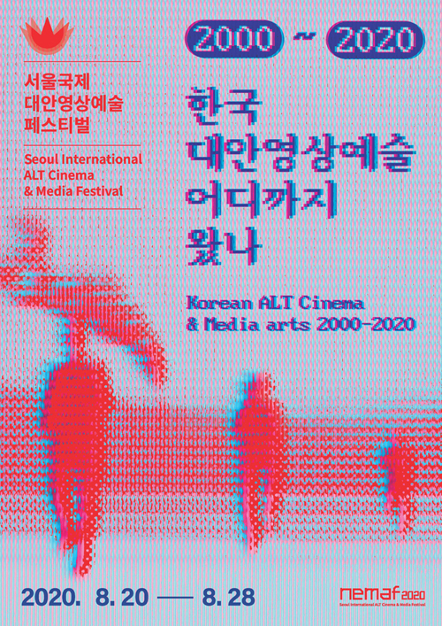
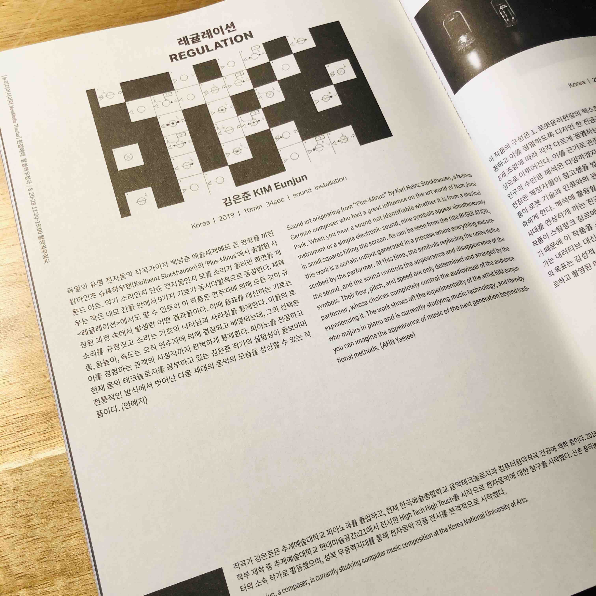
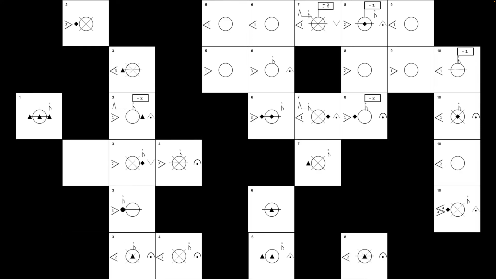

REGULATION




Exploring the Boundaries of Control and Chaos
"REGULATION" is an audiovisual work that delves into the concept of control within a system. Through real-time generated visuals and sound, the piece examines how strict rules (regulations) can both create order and incite chaos.
The visual elements are governed by a set of algorithms that dictate their movement, color, and form. As the piece progresses, these regulations are manipulated—tightened to create rigid, geometric structures, or loosened to allow for organic, unpredictable motion.
The soundscape parallels this visual evolution. Synthesized textures shift from rhythmic, mechanical precision to dissonant, ambient noise, reflecting the tension between system stability and entropy. The work invites the audience to question the nature of rules: do they protect us, or do they confine us?
Credits
- Composition & Visuals: Kim EunJun
- System: Max8
- Performances:
- 2024 Arts Korea Lab Festival, Seoul
- 2020 The 20th Seoul Int'l ALT Cinema & Media Festival (Nemaf2020), Seoul